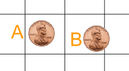
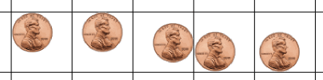
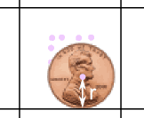
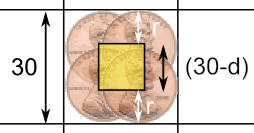

Activity: Dropping a Coin onto a Grid

A few hundred years ago people enjoyed betting on coins tossed on to the floor ... would they cross a line or not?
A man (Georges-Louis Leclerc, the Count of Buffon, see "Buffon's Needle") started thinking about this and worked out how to calculate the probability.
Now it is your turn to have a go!
You will need:
 |
A small round coin, such as a US penny, a 1c Euro or 5 Rupee. |
 |
A sheet of paper with a grid of 30 mm squares. |
Steps
- Measure the diameter of your coin: ____ mm
- a US Penny is 19mm, a 1c Euro is 16.25mm, a Rs 5 is 23mm
- Also measure the spacing of your grid (it may not print at exactly 30mm): ____ mm
- Put your sheet of paper on a flat surface such as a table top or the floor.
- From a height of about 5cm, drop the coin onto the paper and record whether it lands:
A: Completely inside a square (not touching any grid lines)
B: Crosses one or more lines

The exact height from which you drop the coin is not important, but don't drop it so close to the paper that you are cheating!
If the coin rolls completely off the paper, then do not count that turn.
100 Times
Now we will drop the coin 100 times, but first ...
... what percentage do you think will land A, or B?
Make a guess (estimate) before you begin the experiment:
| Your Guess for "A" (%): | |
| Your Guess for "B" (%): |
OK let's begin.
Drop the coin 100 times and record A (does not touch a line) or B (touches a line) using Tally Marks:
| Coin lands | Tally | Frequency | Percentage |
|
A |
|||
|
B |
|||
| Totals: | 100 | 100% |
Now draw a Bar Graph to illustrate your results. You can create one at Data Graphs (Bar, Line and Pie).
- Are the bars the same height?
- Did you expect them to be?
- How does the result compare with your guess?
We Can Calculate What It Should Be ...
Here are some positions for the coin to land so it does not quite touch one of the lines:

Place your coin on your grid (like above), and then put a mark on the paper where the center of the coin is (just a rough estimate will do).
|  |
See how the coin's center is one radius r away from a line. (Read about a Circle's Radius and Diameter.) |
Make lots of "center marks" then draw a box connecting them all like below:

d = Coin's diameter (2 × r)
When a coin's center is within the yellow box it won't touch any line.
The yellow box is smaller than the grid by two radiuses (= one diameter) of the coin.
So what are the areas?
- The area of the grid square is 30 × 30 = 900 mm2
- The area of the yellow box is (30-d) × (30-d) = (30-d)2 mm2
The above calculation was for a 30 mm grid, but we can use S for grid size:
- The area of the grid square is S × S = S2 mm2
- The area of the yellow box is (S-d)2 mm2
Example: A 1c Euro (d=16.25 mm) on a 29mm grid (S=29 mm):
Grid Square = 292 = 841 mm2
Yellow Box = (29-16.25)2 = 12.752 = 162 mm2 (to the nearest mm2)
So you should expect the coin to land not crossing a line of the grid approximately:
"A" = 162 / 841 = 19.3% of the time
And "B" = 100% - 19.3% = 80.7%
Now do the calculations for your own grid size and coin size.
| Grid Spacing S (mm): | |
| Diameter of Coin d (mm): | |
| Area of Grid Square = S2 (mm2): | |
| Area of Yellow Box = (S-d)2 (mm2): | |
| "A" (%): | |
| "B" (%): |
How do these theoretical results compare with your experimental results?
It won't be exact (because it is a random thing) but it may be close.
Different Sizes of Coin
Try repeating the experiment using a different sized coin.
- First calculate the theoretical value ... how does this affect the values for A and B?
- Then do the experiment to see how close it gets.
What You Have Done
You have (hopefully) had fun running an experiment.
You have done some geometry, and had some experience calculating areas and probabilities.
And you have seen the relationship between theory and reality.